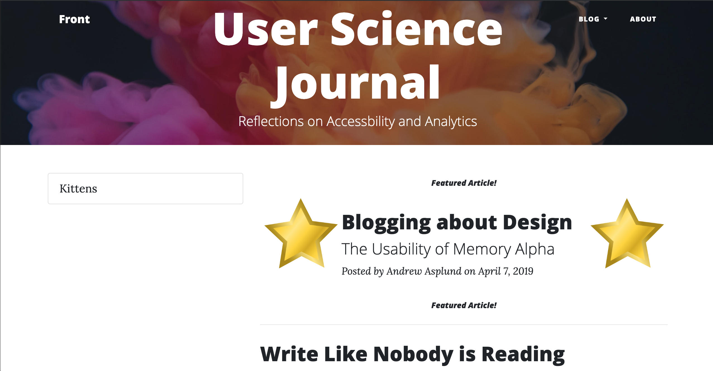
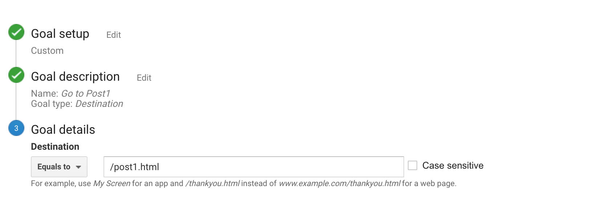
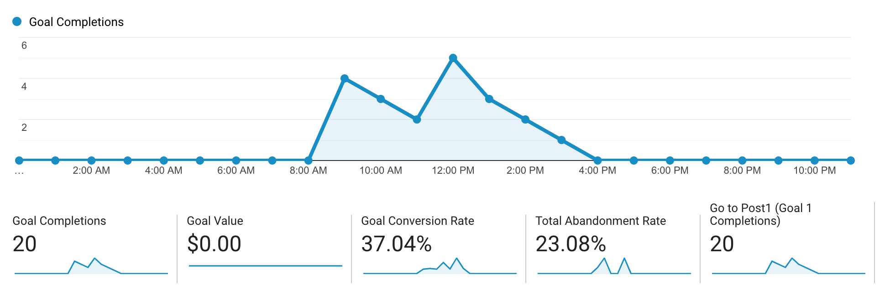

Introduction
Having spent time talking about Google Analytics last time, now the focus was setting up a goal and a funnel. The idea is to learn to better use Google Analytics and learn how important features (such as goals and funnels) work.
Reading the Old Stuff
Because this is just a basic blog website, I figured the best way to "test" the goal and funnel system was to advertise a page as a "feature" on the front page. Because I don't really advertise this site (outside of turning in assignments), I figured the best thing to do was set up an Analytics goal for a page that wouldn't otherwise be viewed often and then create something that promotes that page. Once that was done, it would be straightforward enough to then direct people to the site and see if Google observes the directed traffic.
For all intents and purposes, the oldest page on the site is the very first post that I created at the beginning of the quarter. Therefore, this post (in which I looked at the FANDOM website for Star Trek, Memory Alpha) seemed like a good target for testing. In order to "promote" the page, I decided to create a "duplicate" entry for it on index.html and flag it as a "featured page," including tagging it with stars to attract attention.
 After three quarters, this is the best I could manage.The analytical intent is that these "featured post" markings will steer more websites viewers towards this page from the front page (index.html). Hopefully, this will create something that Google Analytics can track.
Setting up the Technical Stuff
With an analytical target (the first post) and content to direct people there, the next step was to set up a "Goal" within Google Analytics. Based on what was established previously, the actual goal was relatively simple.
 This goal wasn't super complicated, at least as it was implemented here.The primary goal added to Google Analytics was essentially this: visit the first post (post1.html). As I had also created content to motivate people to go to the page, it seemed appropriate to also add that as a funnel to track. Essentially, I wanted to see how many people went to the first post and, of all those, how many got there by first going to the front page. In essence, the goal is to determine, "Does this 'featured post' marking bring people to the page?"
Initial Results
As this site does not receive a significant amount of traffic, I had very few results after the first few days. In addition, I was getting no goal completion from the few users I had. I quickly determined that I had constructed the goal incorrectly; I did not properly include the necessary URL information. Once I determined this was a problem, I updated the goal and decided to push some traffic. In order to get more people involved, I posted a link to the front page of this site on Facebook (friends only) to see what sort of data I could get.
 Within half a day, there was already a reasonable amount of data available.As illustrated above, the simple test resulted in a 37.04% Goal completion rate. Of the 54 visits to the site, 20 of them completed the goal of going from the front page (index.html) to the page for the first post (post1.html). Given how much I worked on making the "featured post" stand out, I was actually somewhat surprised at this result. However, several of my friends who commented on the post let me know of something else that stood out to them: the sidebar with the broken link "Kittens." This suggests that I need to do something with that.
Conclusions
This first experiment with Google Analytics taught me a lot, mostly about how I was using it wrong. As I continue to experiment and learn about how Google Analytics works, I will hopefully learn more about how to better implement goals and funnels.